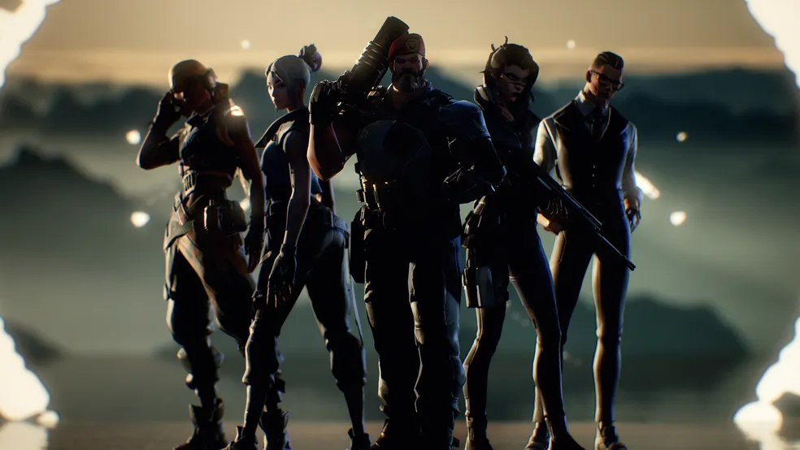
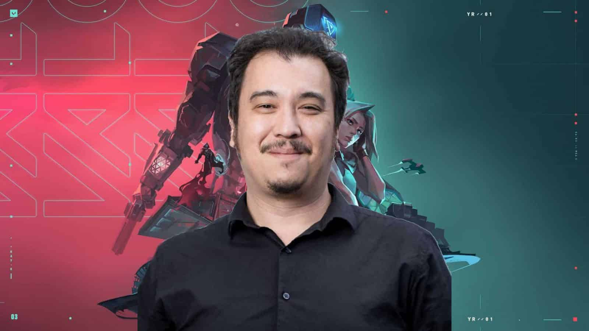
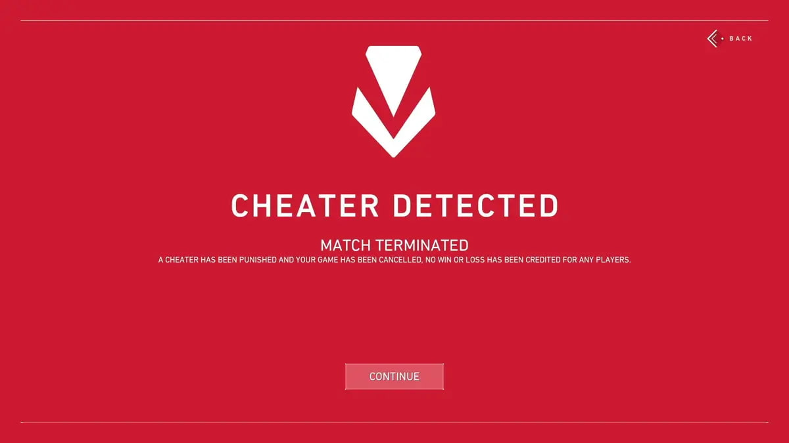

Depois do grande sucesso do League of Legends (LoL) pelo mundo, a Riot Games resolveu apostar em outro gênero de jogo: o First-Person Shooter (FPS) - ou jogo de tiro em primeira pessoa, em português. Assim, durante o primeiro semestre de 2020, Valorant era apresentado como novo divisor de águas da desenvolvedora e que rapidamente se tornando um grande sucesso.
Bastante parecido com o Counter-Strike: Global Offensive (CS:GO) - um dos maiores títulos desta categoria - o Valorant mantém a proposta de tiro em primeira pessoa tático em equipe (5 contra 5), mas com suas particularidades. Nesta reportagem, o ge conta tudo sobre o jogo, quais são os objetivos, agentes, armas, mapas, cenário de competições (esports), etc.
O que é o Valorant?
Valorant, como dito no início desta pauta, é um jogo de tiro tático disputado entre duas equipes com cinco integrantes cada, separadas nos lados Atacante e Defensor. Este primeiro, tem como objetivo plantar a Spike - bomba que utiliza a Radianita como fonte de poder - no mapa, enquanto o outro precisa desarmar ou impedir o artefato de chegar ao solo.
Além de garantir rounds utilizando o plante da Spike ou até mesmo o desarme, as equipes também podem pontuar eliminando todos os jogadores do outro time. Vale destacar que, dependendo do mapa, podem ter dois ou três áreas para plantar o artefato. Se o mesmo não for desarmado antes do tempo da detonação, o ponto é da equipe atacante.
Em partidas casuais, vence a equipe que garantir 13 rounds, mesmo se o placar ficar 12 a 12. Em caso de empate no Competitivo, o jogo deve ser decidido em uma prorrogação, onde quem vencer dois rounds primeiro, vence. Contudo, é possível decretar empate caso o placar se mantenha em igualdade (13 a 13, 14 a 14...).
O grande diferencial das partidas do Valorant é a formulação de estratégias utilizando composições de agentes. Estes, por sua vez, possuem habilidades e classes que podem traçar planos de execuções em equipe.
Desenvolvimento
Valorant foi desenvolvido e publicado pela Riot Games, o estúdio por trás de League of Legends. O desenvolvimento começou em 2014, dentro de sua divisão de pesquisa e desenvolvimento. Joe Ziegler, diretor de Valorant, é creditado com a ideia inicial de Valorant enquanto formula jogos em potencial com outros desenvolvedores da Riot. David Nottingham é o diretor criativo de Valorant. Trevor Romleski, ex-projetista de League of Legends e Salvatore Garozzo, ex-jogador profissional e projetista de mapas para Counter-Strike: Global Offensive são os projetistas de Valorant. Moby Francke, ex-desenvolvedor da Valve, que foi projetista de arte e personagens para Half-Life 2 e Team Fortress 2, é o diretor de arte.
Valorant foi desenvolvido com dois focos principais: fazer os jogos de tiro tático e os esportes eletrônicos mais acessíveis aos novos jogadores e criar um jogo que atrairia uma grande cena competitiva, enquanto resolveria muitos dos pontos de crítica expressos por jogadores profissionais de jogos do gênero. Jogos destinados a grandes comunidades ativas e bases de jogadores, normalmente jogos gratuitos como Fortnite ou o próprio League of Legends da Riot, tendem a colocar ênfase em uma gama mais ampla de melhorias no desempenho do sistema e estabilidade do jogo, em vez de tecnologias ou gráficos mais recentes, como uma maneira de garantir que eles sejam o mais acessíveis possível. Em entrevistas que antecederam o lançamento do jogo, o diretor do jogo Joe Ziegler e a produtora Anna Donlon disseram que Valorant foi feito para pessoas jogando seu primeiro jogo de tiro tático tanto quanto para jogadores profissionais, e que a acessibilidade do jogo era uma grande prioridade. Saiba mais.
Lançamento
Valorant foi provocado pela primeira vez sob o título Project A em outubro de 2019. Foi anunciado oficialmente em 1º de março de 2020, com um vídeo de jogabilidade no YouTube chamado "The Round". A versão beta fechada do jogo foi lançada em 7 de abril de 2020 nos Estados Unidos, Canadá, Europa, Rússia e Turquia; no Brasil e na Coreia do Sul, a versão beta foi lançada em 5 de maio. Valorant foi lançado oficialmente em 2 de junho de 2020 para maioria das regiões do mundo através de etapas por cada localidade e seus fusos horários. Começou pela Coreia do Sul, Japão e maior parte da região Ásia-Pacífico. Logo após, chegou a vez dos servidores da Europa, Turquia, Oriente Médio, Norte da África e países da CEI. Pouco depois, o Brasil, América do Norte e América Latina viram o jogo ser disponibilizado. Até o momento, Valorant está disponível exclusivamente para a plataforma Microsoft Windows.
Sistema anti-trapaça
O jogo foi criticado por seu sistema anti-trapaça Vanguard, já que foi revelado que ele roda em um driver de kernel, que permite o acesso ao sistema do computador. O OSNews expressou preocupação de que a Riot Games e seu proprietário, o conglomerado de tecnologia chinês Tencent, pudessem espionar os jogadores e que o driver do kernel pudesse ser potencialmente explorado por terceiros. No entanto, a Riot Games afirmou que o driver não envia nenhuma informação de volta para eles e lançou um programa de recompensas de bugs para oferecer recompensas por relatórios que demonstram vulnerabilidades com o software. A recompensa recompensará os hackers de chapéu branco entre US$ 25.000 e US$ 100.000 por relatórios sobre suas vulnerabilidades, com o pagamento baseado na gravidade da exploração. Erros de jogabilidade não se qualificam para esta recompensa.
Valorant não será executado no Windows 11 se o sistema não tiver um criptoprocessador compatível com Trusted Platform Module (TPM) 2.0 e inicialização segura UEFI habilitada, conforme exigido pelos requisitos mínimos de sistema da Microsoft para o sistema operacional.